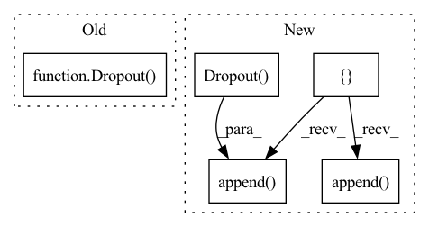

Pattern ID :22421

Before Change
self.compile(loss=torch.nn.CrossEntropyLoss(),
optimizer=optim.Adam(paras, lr=lr),
metrics=[Accuracy()])
self.dropout = Dropout(dropout)
self.layers = layers
def forward(self, x, nbrs):
After Change
bias=False):
super().__init__()
conv = []
conv.append(nn.Dropout(dropout))
for hid, act in zip(hids, acts):
conv.append(MedianConvolution(in_channels,
hid,
bias=bias))
conv.append(activations.get(act))
conv.append(nn.Dropout(dropout))
in_channels = hid
conv.append(MedianConvolution(in_channels, out_channels, bias=bias))
conv = Sequential(*conv)
self.conv = conv
self.compile(loss=nn.CrossEntropyLoss(),
In pattern: SUPERPATTERN
Frequency: 3
Non-data size: 5
Instances
Fragment ID: 70943210
Project Name: edisonleeeee/graphgallery
Commit Name: 4a0b252917d5068be1fc68f2752b58b6119c3a21
Time: 2021-02-09
Author: cnljt@outlook.com
File Name: graphgallery/nn/models/pytorch/median.py
M Class Name: MedianGCN
N Class Name: MedianGCN
M Method Name: __init__(9)
N Method Name: __init__(9)
M Parent Class: TorchKeras
N Parent Class: TorchKeras
M File Name: graphgallery/nn/models/pytorch/median.py
N File Name: graphgallery/nn/models/pytorch/median.py
M Start Line: 25
M End Line: 47
N Start Line: 21
N End Line: 33
'>
Before Change
self.compile(loss=torch.nn.CrossEntropyLoss(),
optimizer=optim.Adam(paras, lr=lr),
metrics=[Accuracy()])
self.dropout = Dropout(dropout)
self.layers = layers
def forward(self, x, nbrs):
After Change
bias=False):
super().__init__()
conv = []
conv.append(nn.Dropout(dropout))
for hid, act in zip(hids, acts):
conv.append(TrimmedConvolution(in_channels,
hid,
bias=bias,
tperc=tperc))
conv.append(activations.get(act))
conv.append(nn.Dropout(dropout))
in_channels = hid
conv.append(TrimmedConvolution(in_channels, out_channels,
bias=bias,
tperc=tperc))
conv = Sequential(*conv)
self.conv = conv
self.compile(loss=nn.CrossEntropyLoss(),
'>
Fragment ID: 70943208
Project Name: edisonleeeee/graphgallery
Commit Name: 4a0b252917d5068be1fc68f2752b58b6119c3a21
Time: 2021-02-09
Author: cnljt@outlook.com
File Name: graphgallery/nn/models/pytorch/trimmed_gcn.py
M Class Name: TrimmedGCN
N Class Name: TrimmedGCN
M Method Name: __init__(10)
N Method Name: __init__(10)
M Parent Class: TorchKeras
N Parent Class: TorchKeras
M File Name: graphgallery/nn/models/pytorch/trimmed_gcn.py
N File Name: graphgallery/nn/models/pytorch/trimmed_gcn.py
M Start Line: 26
M End Line: 49
N Start Line: 22
N End Line: 37
'>
Before Change
// output layer
self.layers.append(GraphConv(inc, out_channels))
self.dropout = Dropout(p=dropout)
self.compile(loss=torch.nn.CrossEntropyLoss(),
optimizer=optim.Adam(self.parameters(),
lr=lr,
weight_decay=weight_decay),
After Change
super().__init__()
conv = []
for hid, act in zip(hids, acts):
conv.append(GraphConv(in_channels,
hid,
bias=bias))
conv.append(activations.get(act))
conv.append(nn.Dropout(dropout))
in_channels = hid
conv.append(GraphConv(in_channels, out_channels))
conv = Sequential(*conv, inverse=True) // `inverse=True` is important
'>
Fragment ID: 70943212
Project Name: edisonleeeee/graphgallery
Commit Name: 4a0b252917d5068be1fc68f2752b58b6119c3a21
Time: 2021-02-09
Author: cnljt@outlook.com
File Name: graphgallery/nn/models/dgl_torch/gcn.py
M Class Name: GCN
N Class Name: GCN
M Method Name: __init__(9)
N Method Name: __init__(9)
M Parent Class: TorchKeras
N Parent Class: TorchKeras
M File Name: graphgallery/nn/models/dgl_torch/gcn.py
N File Name: graphgallery/nn/models/dgl_torch/gcn.py
M Start Line: 26
M End Line: 39
N Start Line: 24
N End Line: 35